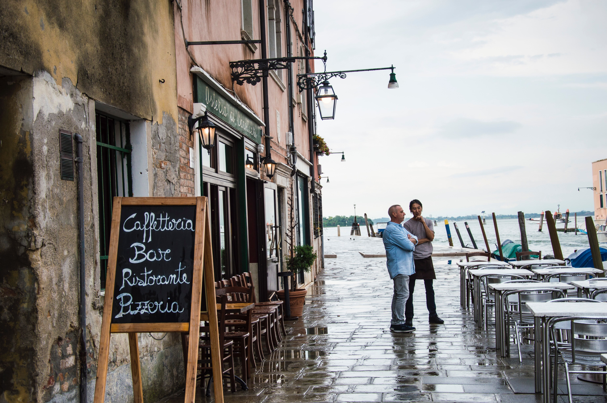

Trip nach Venedig
Venedig ist eine Stadt im Nordosten Italiens. Sie ist die Haupstadt der Region Venetien. Venedig zählt etwa 260.000 Einwohner.
Venedig ist eine idyllische Stadt mit einzigartigem Flair. Gerade die Tatsache, dass die Stadt mit dem Boot erkundet werden kann, ist sehr reizvoll. Wir werden dort voraussichtlich 3 Nächte verbringen.

Am Programm stehen für uns unter anderem die Stadterkundung mittels Gondel, die Besichtigung des Markusplatz und ein langer Spatziergang durch die Altstadt.
